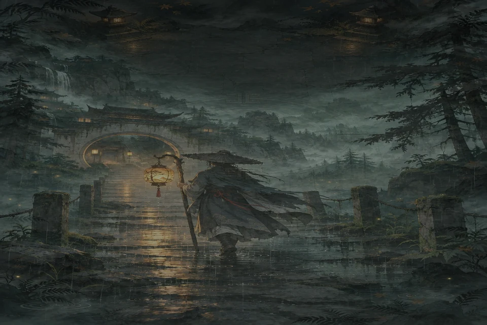

무기를 선택하세요
칼날과 창부터 갈고리, 채찍, 망치, 유성 망치까지 30명의 파수꾼이 다양한 범위, 리듬, 공격 형태를 가져옵니다.
안개 속의 랜턴
랜턴 하나. 어느 날 밤. 새벽까지 서십시오.
안개가 피어오르면 생물들이 돌계단을 내려갑니다. 파수꾼을 선택하고 산에 들어가 짧고 긴장된 야간 순찰을 통해 길을 찾으세요.

조용한 생존 게임
파수꾼을 선택하고, 무리를 헤쳐나가고, 경험치를 수집하고, 축복과 돌파구를 통해 각 달리기를 형성하세요. 모든 업그레이드는 절충안입니다. 다음 물결이 그것을 시험해 볼 것입니다.
칼날과 창부터 갈고리, 채찍, 망치, 유성 망치까지 30명의 파수꾼이 다양한 범위, 리듬, 공격 형태를 가져옵니다.
레벨이 오를 때마다 세 가지 축복 중 하나를 선택하세요. 공격, 치명타 확률, 범위, 이동 및 생존은 빌드를 다양한 방향으로 끌어옵니다.
5단계마다 가드전이 찾아옵니다. 현재 경로에 있는 모든 경비병을 물리치고 돌파하여 산 속으로 더 깊이 들어가십시오.
시계의 모양
캐릭터가 자동으로 공격하므로 안개 속에서 위치 지정, 타이밍 및 다음 결정에 주의를 집중할 수 있습니다.

사용 가능한 역할과 전투 방식을 선택한 다음 첫 번째 경로를 밝힐 경로를 선택하세요.
경험과 장비를 수집한 다음, 무기와 상황에 따라 점진적으로 빌드를 형성하는 축복을 선택하세요.
경기장의 모든 경비병을 처치하여 무대 잠금을 해제하세요. 마지막 전투를 클리어하여 루트를 완성하세요.
안개 속의 길
비가 내리는 돌 안뜰부터 갈대가 늘어선 물까지, 각 길은 조금 더 멀리 열립니다. 모든 발전은 다음 랜턴이 시작할 수 있는 장소를 제공합니다.

산문을 통과하는 비처럼 밝은 돌계단.

경비원이 도착하기 전에 벨이 울립니다.

경로가 확보된 후에도 무리는 안개 속에서 계속 상승합니다.
빛 속에 머물러라
Mistwick Vigil은 싱글 플레이어 오프라인 경험에 중점을 두고 있습니다. 문제를 보고할 때 기기 모델, Android 버전, 앱 버전 및 문제가 발생한 단계를 포함하세요. 민감한 개인정보는 포함하지 마세요.
설정, 잠금 해제, 진행 상황은 기기에 그대로 유지됩니다. 앱 저장 공간을 비우거나 앱을 제거하면 해당 앱이 제거됩니다. 클라우드와 동기화되지 않습니다.
핵심 게임플레이는 오프라인에서 작동합니다. 원격으로 호스팅되는 개인정보 보호정책 또는 약관을 열려면 인터넷 연결이 필요합니다.